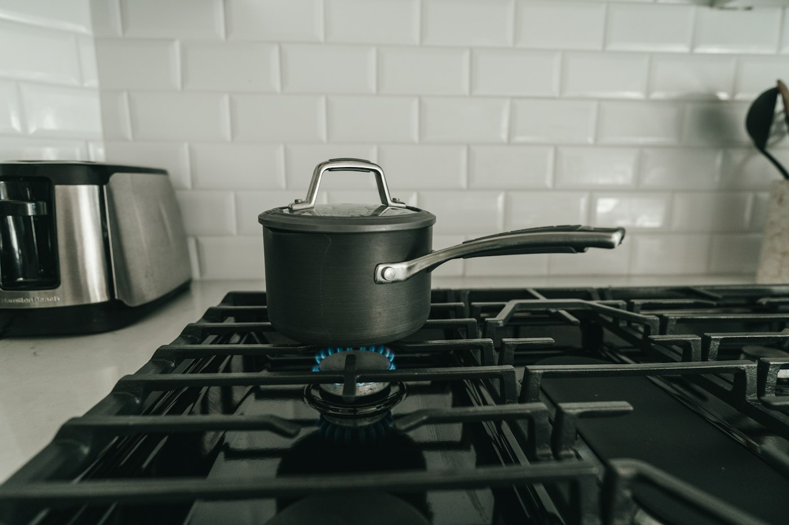

How to close all your tabs in Chrome without losing them
Short answer
Save the tabs first, then close them. In Chrome alone, press Ctrl+Shift+D (⌘+Shift+D on a Mac) to bookmark every tab in the window into one folder, then close the window with Ctrl+Shift+W (⌘+Shift+W). Closed one by mistake? Ctrl+Shift+T (⌘+Shift+T) brings the window back. With Simmer, press Put away: each task's tabs are saved before they close, and one click brings a task back whole.

Before you close anything, save the set
The tabs themselves are easy to close. What's hard to get back is the set: the six pages that went together for one job. Save that first.
- Bookmark all tabs. Press Ctrl+Shift+D (⌘+Shift+D on a Mac). Chrome puts every tab in the window into one new folder. Give it a name you'll recognise next month, such as the task and the date.
- Have Chrome reopen them at start-up. In Settings → On start-up, choose Continue where you left off. Chrome then reopens the windows you had when you quit. It doesn't help with tabs you close yourself.
Ways to close many tabs at once
- The whole window: Ctrl+Shift+W (⌘+Shift+W on a Mac).
- Every tab but this one: right-click the tab and choose Close other tabs.
- Everything to the right: right-click a tab and choose Close tabs to the right.
- A handful you pick: hold Ctrl (⌘ on a Mac) and click each tab, then press Ctrl+W (⌘+W). Every selected tab closes.
- A tab group: right-click the group's name for the options to close it. A saved group stays on the bookmarks bar, ready to open again.
Get them back
- Just now: Ctrl+Shift+T (⌘+Shift+T) reopens the last tab or window you closed, with all its tabs. Press it again to go further back.
- Earlier today: the History menu lists Recently closed tabs and windows.
- From your bookmarks: right-click the folder you saved and open all its bookmarks.
To find one page rather than the whole set, see how to find a tab you lost.
Close by task, not by window
A window rarely holds one thing. The trip, the bug and the camera you're choosing sit side by side, so closing a window closes all three, and a bookmarks folder keeps them in one heap. Simmer sorts your open tabs into the things you're in the middle of first, so you close the ones you're done with for now and keep the one you're working on.
Each task you put away goes on the back burner. Its tabs are saved before they close, in Simmer's list on your computer and in your bookmarks if you like. Mail, chat, calendars and pinned tabs stay open. Everything is listed under Recently with Undo, and Bring back reopens every tab of a task, in its group.
- Add Simmer to Chrome. It reads your open tabs and changes nothing yet.
- Look at the list. Your tabs appear as a few things you're in the middle of.
- Press Put away. The tasks you aren't working on go on the back burner and the window clears.
- Bring one back when you need it. Open the side panel from the toolbar and press Bring back.
Questions
- Can I undo closing all my tabs in Chrome?
- Yes, while Chrome is still open: Ctrl+Shift+T (⌘+Shift+T on a Mac) reopens the last window you closed with all its tabs. The History menu's Recently closed list goes further back. Tabs Simmer puts away are listed under Recently with Undo.
- How do I close all tabs except one?
- Right-click the tab you want to keep and choose Close other tabs.
- Does closing tabs make Chrome faster?
- It frees the memory those tabs were using. See what your tabs cost in Chrome's Task Manager, opened with Shift+Esc on Windows and ChromeOS.
- Will Simmer close my pinned tabs or my mail?
- No. Pinned tabs, the active tab, tabs playing sound, mail, chat and calendars stay open, and you can keep any site open.